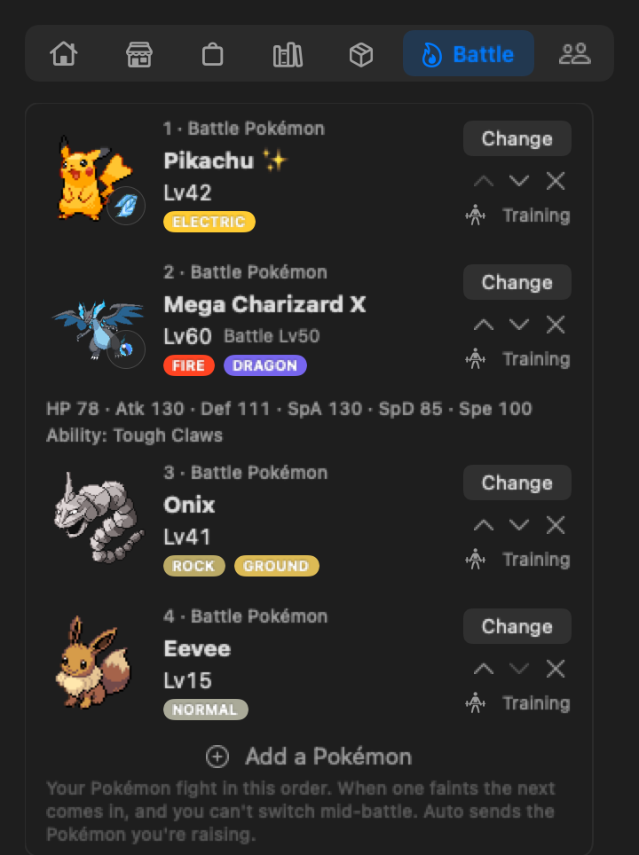
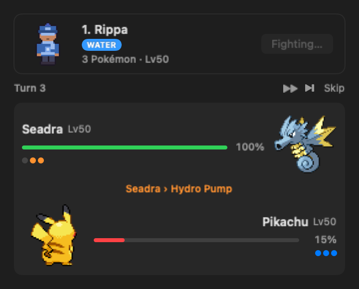

Link once
Ask the bot for a link. A button in the DM saves the connection in the app, and the token never leaves the DM.
Link the YPoke Slack battle bot, line up to six Pokémon, and take on each region’s gyms, the Elite Four and the champion.
With the YPoke Slack battle bot linked, the Battle tab lines up to six Pokémon in fighting order; Auto sends the one you are raising. Sub-tabs split the tab into Entry, Battle and History. Each lineup row shows the stats it fights with, marks what its nature raises and lowers, and follows its form.

Each region’s eight gym leaders sit in two columns, with the hideout and the Elite Four below them. Gym leaders field three to six Pokémon of their own type from their region, each with four strong moves and a held item. Your team fights at Lv50 or below, and nothing is posted to Slack. A win earns the badge and can grant a TM, and the badge case shows each region’s badges.

Below the gyms, the hideout is a run of battles with a full heal before each one, and a loss starts it again. Eight badges open the Elite Four run below it. The champion brings the region’s legendaries and hides one more partner, shown as +1 ?, until the first six faint. Beating the champion opens a hidden boss whose first clear pays a strong TM, a shiny legendary egg and Rare Candies. Each gym fight can be replayed turn by turn, with Mega Evolutions and form changes drawn as they happen.

A gym fight plays back turn by turn: moves, damage, HP bars and each side’s remaining Pokémon. Mega Evolutions and form changes show in their new form from the turn they happen. Move names follow the app language. Fast-forward, step to the next turn, or skip to the result.

The bot links the app to your team’s Slack. The app uploads your entry, and battles run on the bot.
Ask the bot for a link. A button in the DM saves the connection in the app, and the token never leaves the DM.
Battle with one to six Pokémon each, in the order the app uploaded. The channel gets a result card with both lineups, and a rematch button for the two who fought.
Challenge the bot for a random team at your Pokémon’s levels. Practice battles are not recorded.
Post anyone’s win-loss record, this week’s top 10 or a Pokédex summary in the channel.